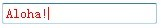

RS3009: IE6 IE7 IE8(Q) 不支持 ':focus' 伪类
作者：武利剑
标准参考
关于 ':focus' 伪类
‘:focus’ 伪类定位获取了键盘焦点的所有元素。
关于 ‘:focus’ 伪类的详细信息，请参考 CSS2.1 规范 5.11.3 The dynamic pseudo-classes: :hover, :active, and :focus 中的内容。
问题描述
CSS 2.1 规范中描述的 ':focus' 伪类，在 CSS 1 历史规范中均无规定，这导致早期版本的浏览器，如：IE6 IE7 IE8(Q) 不支持 :focus 伪类。
造成的影响
如果在元素上使用了 ‘:focus’ 伪类，会使预期的得到焦点时触发效果在 IE6 IE7 IE8(Q) 中无效，但不会影响使用和布局。
受影响的浏览器
| IE6 IE7 IE8(Q) |
|---|
问题分析
对于此问题，我们通过以下的测试用例来说明。
分析以下代码：
<style type="text/css">
input:focus {
color: red;
}
</style>
<input value="Aloha!">
- INPUT 元素使用了 ':focus' 伪类；
根据 CSS2.1 规范中的描述可知，当 INPUT 元素获取焦点后，其中的文字应该变红。
这段代码在不同的浏览器环境中的表现：
| IE6 IE7 IE8(Q) | IE8(S) Firefox Opera Safari Chrome |
|---|---|
 |
 |
所以对于 ‘:focus’ 伪类的支持情况，如下表：
| IE6 | IE7 | IE8(Q) | IE8(S) | Firefox | Safari | Opera | Chrome |
|---|---|---|---|---|---|---|---|
| N | N | N | Y | Y | Y | Y | Y |
【注】：实际中其他除常用 HTML 标记同样适用此例，并非仅 P 标记自身不支持，本文中不再一一测试证明。
解决方案
使用 JavaScript 绑定 onfocus onblur 事件模仿 ‘:focus’ 效果；
使用 Whatever:hover，该组件利用 IE 特有的 CSS 行为（behavior）及通过 JavaScript 来模拟 ‘:focus’ 伪类的效果。
参见
知识库
相关问题
测试环境
| 操作系统版本: | Windows 7 Ultimate build 7600 |
|---|---|
| 浏览器版本: |
IE6 IE7 IE8 Firefox 3.6.3 Chrome 6.0.437.3 dev Safari 5.0 Opera 10.54 |
| 测试页面: | focus.html |
| 本文更新时间: | 2010-07-08 |
关键字
focus Pseudo class